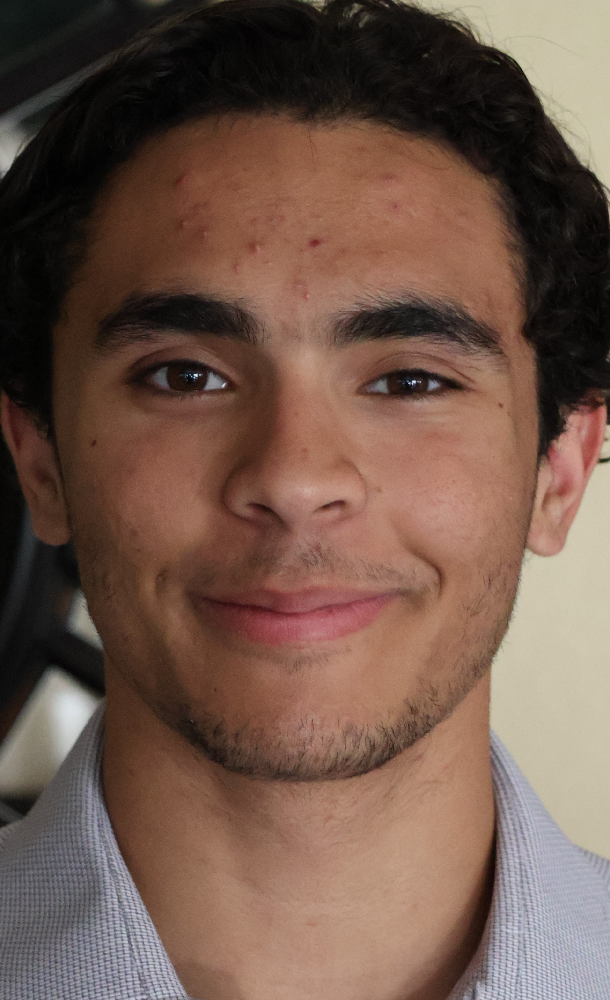

Ryan Sahyoun's Resume
Outgoing and passionate software engineering student on a
journey of personal and professional growth seeking
to apply what I learn to improve our way of living, working, and playing.

Contact Me
Hobbies
Education
California State University Fullerton, BS Computer Science, | Exp. Graduation: June 2026
Yorba Linda High School, AP & Honors Classes, GPA: 4.2+ | Graduated: June 2022
TECHNICAL COURSE WORK
Unity Programmer Course & Certification | Completed May 2022
AP Comp Science A: Java Programming | Completed June 2022
CPSC 121A Object Oriented Programming & Lab | Completed Dec 2022
CPSC 131 Data Structures | In Progress May 2023
Work Experience
- Store Associate, In-N-Out, Anaheim, CA | June 2021 - January 2022
-
At In-N-Out, I provide great service while taking customer orders, preparing
food, and ensuring the restaurant remained clean and tidy at all times.
- Intern, Runa, Remote | June 2023 - Aug 2023
-
During this internship I preformed updates and changes to the Frontend
UI of the company as well as do module updates. I generated receipts
and processed them through the payroll software. Finished setting up the WSL
build process for the frontend and the backend projects. As well as participate
in scrum project development. For all these tasks that I preformed at Runa,
I used Javascript, React, and Ruby on Rails active records. My knowledge on how
a company operates was expanded and I know now how a tech team is able to
communicate with each other as well as get all the required tasks done in a given time.
Super Powers
- Strong analytical qualities
- Methodical in solving problems
- I believe, “There are no problems, only solutions.” - John Lenon
- Ability to breakdown complex topics into simpler, smaller parts
- High attention to detail, striving for perfection.
- Friendly and easy-going :)
VOLUNTEER/COMMUNITY SERVICE
- Friends Christian Church- Kid Ministries Volunteer
-
Helped 3-4-year-old kids learn and play every Sunday for over 2 years at my church
- National League of Young Men Service
-
Fed over 200 people through organizations named Mary’s
Kitchen and the Ronald McDonald House
-
Gathered over 200 hours of service for charity events like
the OC buddy walk and Patriots and Paws where I helped set up and manage
the events to bring smiles and fun memories to over 1,000 people.